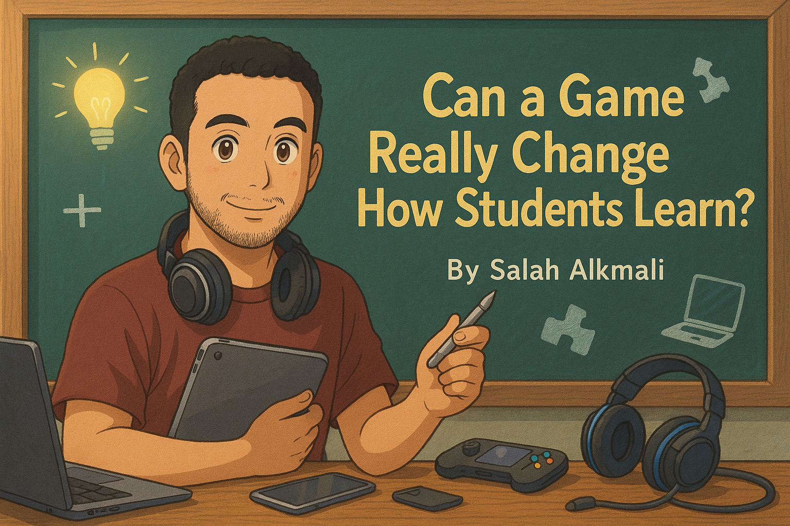

I've been teaching math for years. And honestly? Some days, it feels like I'm the one doing most of the learning.
I learn from my students all the time — especially the ones who say things like:
"I don't like math."
"Why are we even learning this?"
At first, those comments used to frustrate me. But over time, I started listening more carefully. And what I heard… surprised me.
"I'm Not Good at Math" — But They're Amazing at Games?!
Here's the twist:
The same students who struggle with equations or graphs often shine when we play games.
They light up.
They compete.
They laugh.
They focus.
It didn't matter if it was a digital game, a board game, or just a quick activity to review a concept — when learning became a game, they were all in.
That Got Me Thinking…
If they dislike the subject but love the game, why not bring both together?
What if learning could feel like playing?
That's what sparked Mathlogame — a small project I started in my free time. It's a platform where students can learn math by playing short, engaging games. No big tech team. Just me, trying to solve a problem I saw in my own classroom every day.
I made it because I needed it.
And maybe other teachers do too.
It's Not Perfect — But It's Real
The prototype is live.
It's not polished.
It's not fancy.
But it works.
When my students use it, I see something shift in them.
They try.
They engage.
They care — even if just a little more than before.
And honestly, that's enough for me… for now.
But Wait — What Actually Makes a Game "Educational"?
I want to be careful here, because not every game with numbers in it is teaching anything. I've watched kids play "math apps" for thirty minutes and walk away no smarter — just better at tapping screens. So what's the difference between a game that teaches and a game that just distracts?
From what I've seen in my own classroom, a real learning game does these things:
- The math is the gameplay, not a checkpoint. If the kid solves a problem to earn the fun part (a coin, a power-up, a level-up), the math is just a toll. They'll race through it. But if solving the problem is how you play — the math is the move you make — they'll pay attention. That's the whole game.
- Failure is fast and cheap. Get it wrong, lose a point, try again immediately. No shame, no red ink, no five-minute talk from the teacher. Kids will try things in a game they would never try on a worksheet, because the cost of being wrong is two seconds of frustration instead of public embarrassment.
- Feedback is instant. They see the result of their move now, not next week when the test comes back. The brain learns from the dot-to-dot of action and consequence — the closer those two things are in time, the more learning sticks.
- It scales with skill. The game gets harder as the player gets better. Easy at the start so they don't quit. Hard later, so they don't get bored. Without that, the strong kids check out and the struggling kids crumble.
If a "learning game" is missing all four, it's just gamified flashcards. That's not nothing — but it's not what I'm chasing.
Three Games You Can Try in Class Tomorrow (No Tech Required)
You don't need an iPad to do this. Some of the best games I've ever run cost zero dollars and used whatever was on my desk:
- Target Number. Write a target number on the board (say, 24). Roll four dice (or use cards 1–10). Each student has 60 seconds to make 24 using all four numbers and any operations they want. There are usually multiple solutions. Kids fight to share theirs. Works for ages 8 to 18 — just change the target.
- Mistake Hunt. Solve a problem on the board, but plant a wrong step somewhere in the middle. First student to find the mistake and explain why it's wrong gets a point. This one is gold for teaching kids to read math, not just produce it. Bonus: it teaches them that even the teacher gets things wrong, and that's fine.
- Two Truths, One Equation. Give the class three statements about a topic (e.g. "the slope of a vertical line is zero / undefined / very large"). Two are wrong, one is right. Teams debate, then defend their pick out loud. The arguing is the learning. They remember what they had to defend.
None of these need a screen. None of these need a budget. They just need a teacher who's willing to give up ten minutes of "covering content" in exchange for ten minutes of actual thinking.
MATHLOGAME
This game is designed to help you classify numbers into different categories based on their properties. Learn about…
Try MathLogameWhat's Next?
Right now, it's just focused on math.
But one day, I hope it becomes more — a space where learning feels less like pressure… and more like curiosity.
If you're a teacher who believes school shouldn't feel like a punishment, maybe we can build something better — together.
A Final Note to Fellow Teachers
If you're tired,
If your students are tired,
If nothing seems to stick…
Try a game.
Just one.
It might surprise you.
Let's keep trying.
Let's keep building.
Let's make classrooms a place students want to be in — not just somewhere they have to be.
~ Salah Alkmali